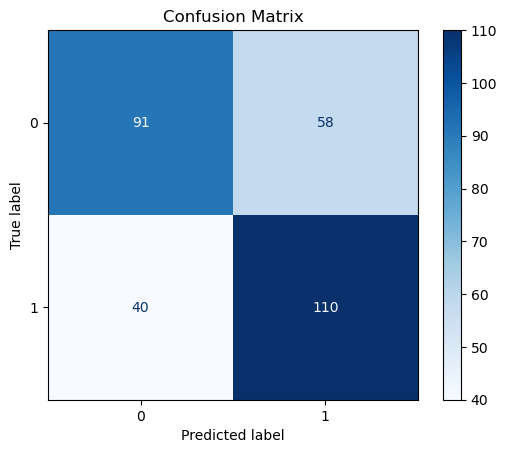
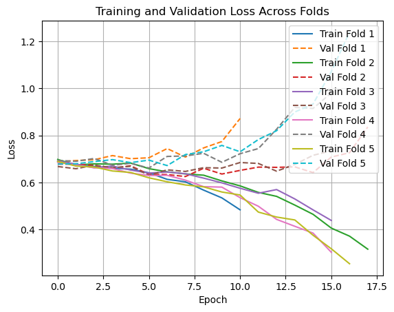

# Import libraries
import os
import pandas as pd
import numpy as np
import matplotlib.pyplot as plt
import torch
import torch.nn as nn
from torch.nn.utils.rnn import pad_sequence
from torch.utils.data import Dataset, DataLoader
from sklearn.metrics import confusion_matrix, ConfusionMatrixDisplay, precision_score, recall_score, f1_score
from sklearn.model_selection import train_test_split, KFold
import matplotlib.pyplot as plt
from sklearn.preprocessing import StandardScalerExtract Feature from Each Frame
# extract features from the CSV file
def extract_frame_features(frame_df, scaler=None):
num_objects = len(frame_df)
avg_conf = frame_df["confidence"].mean()
avg_box_area = ((frame_df["x_max"] - frame_df["x_min"]) *
(frame_df["y_max"] - frame_df["y_min"])).mean()
desired_size = 13
class_counts = np.zeros(desired_size)
for cls in frame_df["object_class"]:
cls = int(cls)
if cls < desired_size:
class_counts[cls] += 1
raw_features = [num_objects, avg_conf, avg_box_area] + class_counts.tolist()
if scaler:
raw_features = scaler.transform([raw_features])[0] # normalize
return torch.tensor(raw_features, dtype=torch.float32)
# Process the CSV file and extract features for each frame
def process_video_csv(csv_path, scaler = None):
df = pd.read_csv(csv_path)
sequences = []
if "frame" not in df.columns or df.empty:
return torch.empty(0, 16) # return empty tensor with correct shape
for _, frame_df in df.groupby("frame"):
frame_feat = extract_frame_features(frame_df, scaler = scaler)
sequences.append(frame_feat)
if not sequences:
return torch.empty(0, 16)
return torch.stack(sequences)
Load Data Labels
import csv
# Load label CSV into a dictionary
label_dict = {}
with open("../../data/train_labels.csv", newline = "") as f:
reader = csv.DictReader(f)
for row in reader:
label_dict[row["id"]] = int(row["target"])Split Data into Training, Validation, and Test Sets
from sklearn.model_selection import train_test_split
# Get all video directories
video_dirs = sorted([
os.path.join("../../data/yolo_processed_data", d)
for d in os.listdir("../../data/yolo_processed_data")
if os.path.isdir(os.path.join("../../data/yolo_processed_data", d))
])
# Initialize an empty list to store video_ids
video_ids = []
# Extract video IDs from the directory names, removing video_ prefix
for video_dir in video_dirs:
video_id = os.path.basename(video_dir).replace("video_", "")
if video_id in label_dict:
video_ids.append(video_id)
else:
raise AssertionError(f"Label missing for video: {video_id}")
# Split the video IDs
train_val_ids, test_ids = train_test_split(video_ids, test_size=0.2, random_state=42, stratify=[label_dict[vid] for vid in video_ids])
def get_video_dirs(ids):
return [os.path.join("../../data/yolo_processed_data", "video_" + vid_id) for vid_id in ids]
train_val_dirs = get_video_dirs(train_val_ids)
test_dirs = get_video_dirs(test_ids)kf = KFold(n_splits=5, shuffle=True, random_state=42)
folds = list(kf.split(train_val_dirs)) # (train_idx, val_idx) for each foldBefore training, we need to compute the mean and standard deviation of each feature from the training set only.
Create Dataset and DataLoader
# Create a dataset class for the video sequences
class VideoDataset(Dataset):
def __init__(self, video_dirs, label_dict, scaler=None):
self.video_dirs = video_dirs
self.label_dict = label_dict
self.scaler = scaler
def __len__(self):
return len(self.video_dirs)
def __getitem__(self, idx):
while True:
video_dir = self.video_dirs[idx]
video_id = os.path.basename(video_dir).replace("video_", "").zfill(5)
label = self.label_dict.get(video_id, 0)
csv_path = os.path.join(video_dir, "detections.csv")
seq = process_video_csv(csv_path, scaler=self.scaler)
if seq is None:
idx = (idx + 1) % len(self.video_dirs)
return self.__getitem__(idx)
return seq, torch.tensor(label, dtype=torch.float32)
# Collate function to pad sequences and create batches
def collate_fn(batch):
# Filter out samples with empty sequences
batch = [(x, y) for x, y in batch if x.size(0) > 0]
if len(batch) == 0:
return None # skip batch if empty
batch.sort(key=lambda x: x[0].size(0), reverse=True)
sequences, labels = zip(*batch)
lengths = torch.tensor([seq.size(0) for seq in sequences])
padded_seqs = pad_sequence(sequences, batch_first=True)
labels = torch.stack(labels)
return padded_seqs, lengths, labels
# # Create datasets for training and validation
# train_dataset = VideoDataset(train_videos, label_dict, scaler=feature_scaler)
# val_dataset = VideoDataset(val_videos, label_dict, scaler=feature_scaler)
# test_dataset = VideoDataset(test_videos, label_dict, scaler=feature_scaler)
# # Create DataLoader objects for training, validation, and testing
# train_loader = DataLoader(train_dataset, batch_size = 4, shuffle = True, collate_fn = collate_fn)
# val_loader = DataLoader(val_dataset, batch_size = 4, shuffle = False, collate_fn = collate_fn)
# test_loader = DataLoader(test_dataset, batch_size = 4, shuffle = False, collate_fn = collate_fn)Define the GRU Model
# Define the GRU model for classification
class GRUClassifier(nn.Module):
def __init__(self, input_dim, hidden_dim, num_layers = 2):
super().__init__()
self.gru = nn.GRU(input_dim, hidden_dim, num_layers, dropout=0.2, batch_first = True, bidirectional = True)
self.fc = nn.Linear(hidden_dim, 1)
self.sigmoid = nn.Sigmoid()
def forward(self, x, lengths):
packed = nn.utils.rnn.pack_padded_sequence(x, lengths.cpu(), batch_first=True, enforce_sorted=False)
_, hn = self.gru(packed)
out = self.fc(hn[-1]) # Get last hidden state
return self.sigmoid(out).squeeze()
Training Loop
device = torch.device("cuda" if torch.cuda.is_available() else "cpu")
fold_train_losses = []
fold_val_losses = []
for fold, (train_idx, val_idx) in enumerate(folds):
print(f"\nFOLD {fold + 1}")
train_dirs = [train_val_dirs[i] for i in train_idx]
val_dirs = [train_val_dirs[i] for i in val_idx]
# Build feature scaler from training data
all_features = []
for video_dir in train_dirs:
for csv_file in sorted(os.listdir(video_dir)):
if csv_file.endswith('.csv'):
csv_path = os.path.join(video_dir, csv_file)
df = pd.read_csv(csv_path)
for _, frame_df in df.groupby("frame"):
features = extract_frame_features(frame_df, scaler=None)
if features.numel() > 0:
all_features.append(features.numpy())
all_features = np.vstack(all_features)
scaler = StandardScaler().fit(all_features)
train_dataset = VideoDataset(train_dirs, label_dict, scaler)
val_dataset = VideoDataset(val_dirs, label_dict, scaler)
train_loader = DataLoader(train_dataset, batch_size=4, shuffle=True, collate_fn=collate_fn)
val_loader = DataLoader(val_dataset, batch_size=4, shuffle=False, collate_fn=collate_fn)
model = GRUClassifier(input_dim=16, hidden_dim=128).to(device)
criterion = nn.BCELoss()
optimizer = torch.optim.Adam(model.parameters(), lr=0.001)
scheduler = torch.optim.lr_scheduler.StepLR(optimizer, step_size=5, gamma=0.8)
best_val_loss = float('inf')
patience_counter = 0
patience = 10
train_losses, val_losses = [], []
for epoch in range(20):
model.train()
train_loss = 0
for batch in train_loader:
if batch is None:
continue
x_batch, lengths, y_batch = batch
x_batch, lengths, y_batch = x_batch.to(device), lengths.to(device), y_batch.to(device)
optimizer.zero_grad()
outputs = model(x_batch, lengths)
loss = criterion(outputs, y_batch)
loss.backward()
optimizer.step()
train_loss += loss.item()
scheduler.step()
avg_train_loss = train_loss / len(train_loader)
train_losses.append(avg_train_loss)
print(f"Epoch {epoch + 1}, Loss: {avg_train_loss:.4f}")
model.eval()
val_loss = 0
with torch.no_grad():
for batch in val_loader:
if batch is None:
continue
x_batch, lengths, y_batch = batch
x_batch, lengths, y_batch = x_batch.to(device), lengths.to(device), y_batch.to(device)
outputs = model(x_batch, lengths)
loss = criterion(outputs, y_batch)
val_loss += loss.item()
avg_val_loss = val_loss / len(val_loader)
val_losses.append(avg_val_loss)
print(f"Validation Loss: {avg_val_loss:.4f}")
if val_loss < best_val_loss:
best_val_loss = val_loss
patience_counter = 0
torch.save(model.state_dict(), f'best_model_fold_{fold + 1}.pth')
else:
patience_counter += 1
if patience_counter >= patience:
print("Early stopping triggered")
break
fold_train_losses.append(train_losses)
fold_val_losses.append(val_losses)
FOLD 1
Epoch 1, Loss: 0.6895
Validation Loss: 0.6878
Epoch 2, Loss: 0.6754
Validation Loss: 0.6932
Epoch 3, Loss: 0.6682
Validation Loss: 0.6966
Epoch 4, Loss: 0.6611
Validation Loss: 0.7142
Epoch 5, Loss: 0.6563
Validation Loss: 0.7010
Epoch 6, Loss: 0.6409
Validation Loss: 0.7050
Epoch 7, Loss: 0.6130
Validation Loss: 0.7441
Epoch 8, Loss: 0.6026
Validation Loss: 0.7080
Epoch 9, Loss: 0.5672
Validation Loss: 0.7469
Epoch 10, Loss: 0.5340
Validation Loss: 0.7740
Epoch 11, Loss: 0.4831
Validation Loss: 0.8723
Early stopping triggered
FOLD 2
Epoch 1, Loss: 0.6978
Validation Loss: 0.6780
Epoch 2, Loss: 0.6740
Validation Loss: 0.6775
Epoch 3, Loss: 0.6791
Validation Loss: 0.6728
Epoch 4, Loss: 0.6777
Validation Loss: 0.6603
Epoch 5, Loss: 0.6823
Validation Loss: 0.6709
Epoch 6, Loss: 0.6586
Validation Loss: 0.6340
Epoch 7, Loss: 0.6450
Validation Loss: 0.6336
Epoch 8, Loss: 0.6362
Validation Loss: 0.6250
Epoch 9, Loss: 0.6307
Validation Loss: 0.6604
Epoch 10, Loss: 0.6064
Validation Loss: 0.6357
Epoch 11, Loss: 0.5852
Validation Loss: 0.6512
Epoch 12, Loss: 0.5575
Validation Loss: 0.6651
Epoch 13, Loss: 0.5405
Validation Loss: 0.6641
Epoch 14, Loss: 0.5034
Validation Loss: 0.6662
Epoch 15, Loss: 0.4641
Validation Loss: 0.6417
Epoch 16, Loss: 0.4054
Validation Loss: 0.7080
Epoch 17, Loss: 0.3711
Validation Loss: 0.7264
Epoch 18, Loss: 0.3156
Validation Loss: 0.8361
Early stopping triggered
FOLD 3
Epoch 1, Loss: 0.6919
Validation Loss: 0.6677
Epoch 2, Loss: 0.6777
Validation Loss: 0.6582
Epoch 3, Loss: 0.6625
Validation Loss: 0.6732
Epoch 4, Loss: 0.6696
Validation Loss: 0.6628
Epoch 5, Loss: 0.6524
Validation Loss: 0.6686
Epoch 6, Loss: 0.6398
Validation Loss: 0.6303
Epoch 7, Loss: 0.6444
Validation Loss: 0.6535
Epoch 8, Loss: 0.6369
Validation Loss: 0.6467
Epoch 9, Loss: 0.6182
Validation Loss: 0.6627
Epoch 10, Loss: 0.5981
Validation Loss: 0.6611
Epoch 11, Loss: 0.5751
Validation Loss: 0.6847
Epoch 12, Loss: 0.5538
Validation Loss: 0.6807
Epoch 13, Loss: 0.5694
Validation Loss: 0.6478
Epoch 14, Loss: 0.5295
Validation Loss: 0.6764
Epoch 15, Loss: 0.4830
Validation Loss: 0.7154
Epoch 16, Loss: 0.4380
Validation Loss: 0.7345
Early stopping triggered
FOLD 4
Epoch 1, Loss: 0.6856
Validation Loss: 0.6937
Epoch 2, Loss: 0.6734
Validation Loss: 0.6897
Epoch 3, Loss: 0.6624
Validation Loss: 0.7020
Epoch 4, Loss: 0.6593
Validation Loss: 0.6733
Epoch 5, Loss: 0.6394
Validation Loss: 0.6812
Epoch 6, Loss: 0.6294
Validation Loss: 0.6613
Epoch 7, Loss: 0.6303
Validation Loss: 0.7106
Epoch 8, Loss: 0.6097
Validation Loss: 0.7127
Epoch 9, Loss: 0.5819
Validation Loss: 0.7240
Epoch 10, Loss: 0.5799
Validation Loss: 0.6856
Epoch 11, Loss: 0.5350
Validation Loss: 0.7223
Epoch 12, Loss: 0.4985
Validation Loss: 0.7441
Epoch 13, Loss: 0.4425
Validation Loss: 0.8265
Epoch 14, Loss: 0.4131
Validation Loss: 0.9196
Epoch 15, Loss: 0.3841
Validation Loss: 0.9151
Epoch 16, Loss: 0.3024
Validation Loss: 0.9812
Early stopping triggered
FOLD 5
Epoch 1, Loss: 0.6893
Validation Loss: 0.6782
Epoch 2, Loss: 0.6696
Validation Loss: 0.6793
Epoch 3, Loss: 0.6657
Validation Loss: 0.6887
Epoch 4, Loss: 0.6486
Validation Loss: 0.6970
Epoch 5, Loss: 0.6424
Validation Loss: 0.6843
Epoch 6, Loss: 0.6197
Validation Loss: 0.6949
Epoch 7, Loss: 0.6027
Validation Loss: 0.6717
Epoch 8, Loss: 0.5892
Validation Loss: 0.7187
Epoch 9, Loss: 0.5810
Validation Loss: 0.7304
Epoch 10, Loss: 0.5591
Validation Loss: 0.7577
Epoch 11, Loss: 0.5463
Validation Loss: 0.7305
Epoch 12, Loss: 0.4736
Validation Loss: 0.7826
Epoch 13, Loss: 0.4524
Validation Loss: 0.8201
Epoch 14, Loss: 0.4400
Validation Loss: 0.8998
Epoch 15, Loss: 0.3749
Validation Loss: 0.9341
Epoch 16, Loss: 0.3173
Validation Loss: 1.0721
Epoch 17, Loss: 0.2536
Validation Loss: 1.2393
Early stopping triggered# Build feature scaler from all train_val data
all_features = []
for video_dir in train_val_dirs:
for csv_file in sorted(os.listdir(video_dir)):
if csv_file.endswith('.csv'):
csv_path = os.path.join(video_dir, csv_file)
df = pd.read_csv(csv_path)
for _, frame_df in df.groupby("frame"):
features = extract_frame_features(frame_df, scaler=None)
if features.numel() > 0:
all_features.append(features.numpy())
all_features = np.vstack(all_features)
test_scaler = StandardScaler().fit(all_features)
test_dataset = VideoDataset(test_dirs, label_dict, test_scaler)
test_loader = DataLoader(test_dataset, batch_size=4, shuffle=False, collate_fn=collate_fn)
model = GRUClassifier(input_dim=16, hidden_dim=128).to(device)
model.load_state_dict(torch.load('best_model_fold_3.pth')) # Example load
model.eval()
correct, total = 0, 0
y_true, y_pred = [], []
with torch.no_grad():
for batch in test_loader:
if batch is None:
continue
x_batch, lengths, y_batch = batch
x_batch, lengths, y_batch = x_batch.to(device), lengths.to(device), y_batch.to(device)
preds = model(x_batch, lengths)
predicted = (preds >= 0.5).float()
y_true.extend(y_batch.cpu().numpy())
y_pred.extend(predicted.cpu().numpy())
correct += (predicted == y_batch).sum().item()
total += y_batch.size(0)
print(f"\nFinal Test Accuracy: {correct / total:.4f}")/var/folders/sm/dt8s0j7j0glg1jfrlpndm0lw0000gn/T/ipykernel_18819/2643477537.py:20: FutureWarning: You are using `torch.load` with `weights_only=False` (the current default value), which uses the default pickle module implicitly. It is possible to construct malicious pickle data which will execute arbitrary code during unpickling (See https://github.com/pytorch/pytorch/blob/main/SECURITY.md#untrusted-models for more details). In a future release, the default value for `weights_only` will be flipped to `True`. This limits the functions that could be executed during unpickling. Arbitrary objects will no longer be allowed to be loaded via this mode unless they are explicitly allowlisted by the user via `torch.serialization.add_safe_globals`. We recommend you start setting `weights_only=True` for any use case where you don't have full control of the loaded file. Please open an issue on GitHub for any issues related to this experimental feature.
model.load_state_dict(torch.load('best_model_fold_3.pth')) # Example load
Final Test Accuracy: 0.6722# Plot confusion matrix
cm = confusion_matrix(y_true, y_pred)
disp = ConfusionMatrixDisplay(confusion_matrix=cm)
disp.plot(cmap=plt.cm.Blues)
plt.title("Confusion Matrix")
plt.show()
# Plot training and validation losses for each fold
for i, (train_losses, val_losses) in enumerate(zip(fold_train_losses, fold_val_losses)):
plt.plot(train_losses, label=f'Train Fold {i+1}')
plt.plot(val_losses, label=f'Val Fold {i+1}', linestyle='--')
plt.xlabel('Epoch')
plt.ylabel('Loss')
plt.title('Training and Validation Loss Across Folds')
plt.legend()
plt.grid(True)
plt.show()
